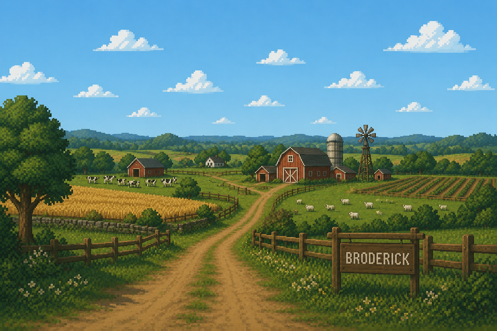

The Levels

Level 1: The Barn
Begin your adventure
Borris begins his adventure on the farm after discovering that his family has been captured.
This level introduces players to the basic gameplay mechanics, including movement, collecting carrots and avoiding enemies.
Players will have to collect all 5 carrots while learning how to deal with the pigs protecting the area.

Level 2: Farmyard
The challenge gets harder
After making it through the farm, Borris reaches the farmyard outside where his family is being held.
The enemies are more difficult and there are 7 carrots to collect.
Players will need to use everything they learned in Level 1 while discovering new obstacles and challenges.

Level 3: The Final Battle
Rescue Borris's family
Borris has finally reached the final area of the farm and is closer than ever to rescuing his family.
This is the hardest level in the game, with a challenging boss fight against the farmer.
Borris must use everything he has learned throughout his journey to defeat the farmer and rescue his family.